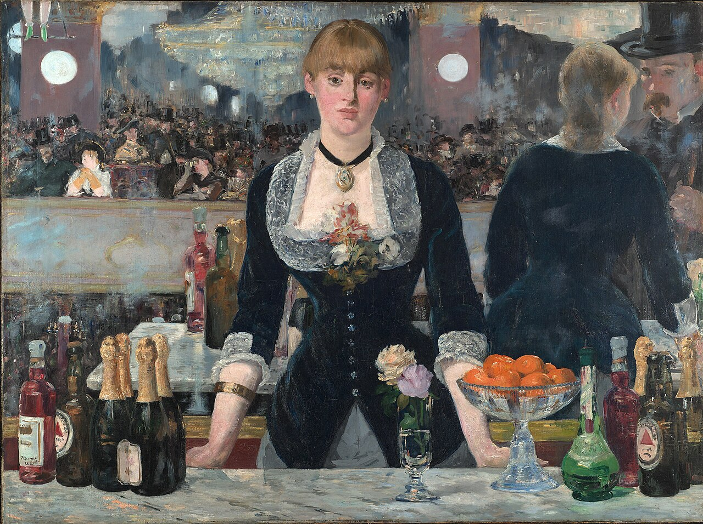
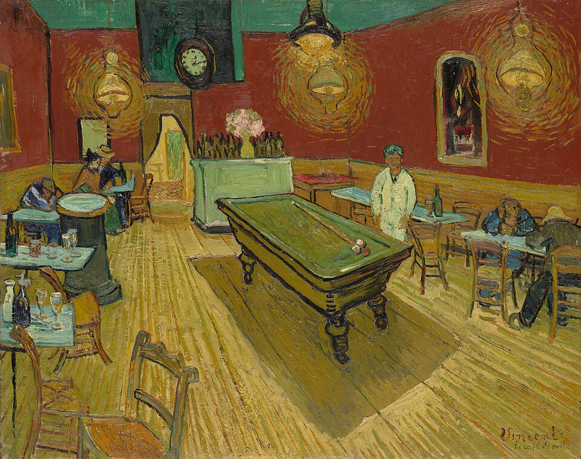
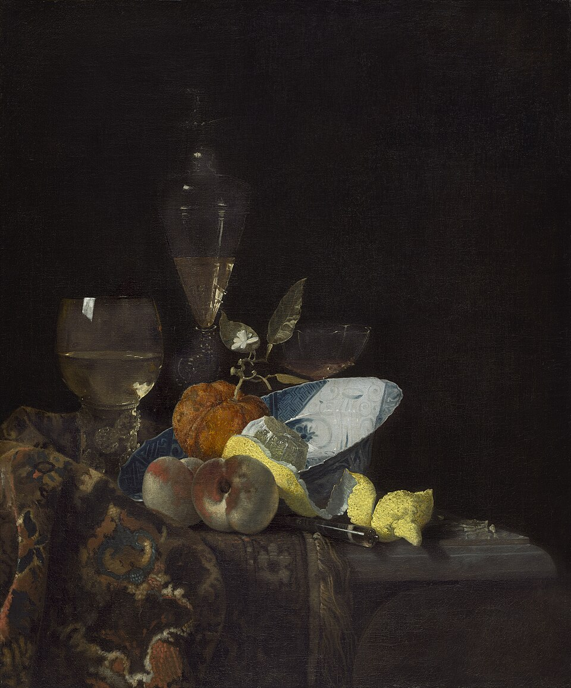
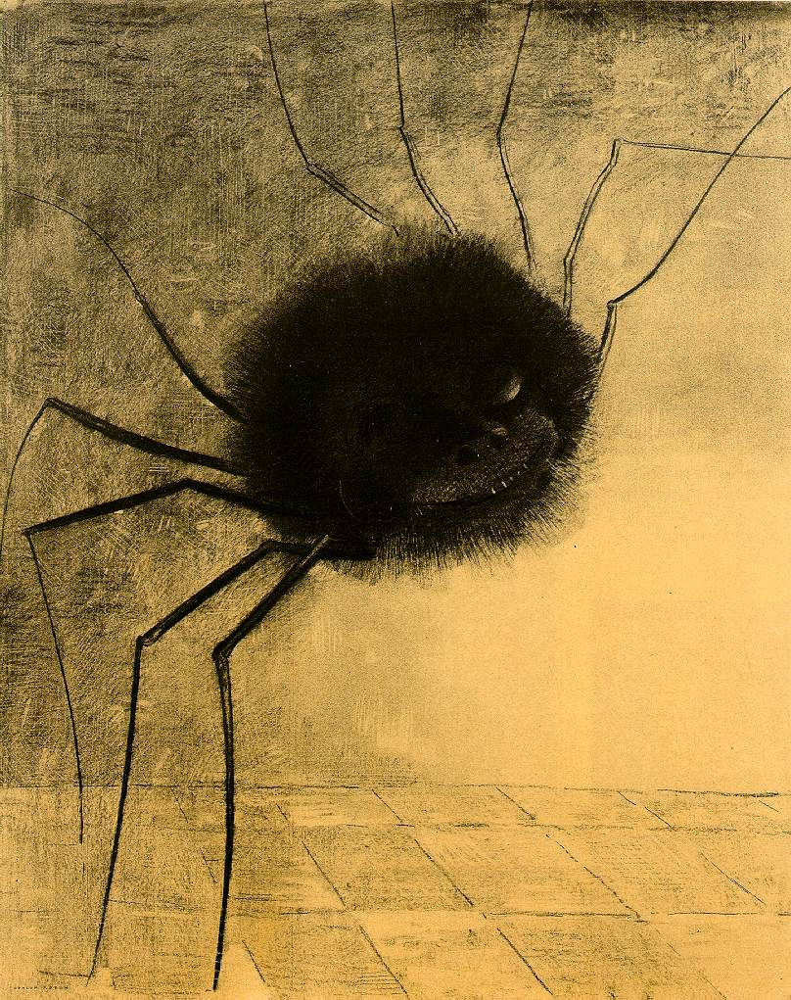

.jpg){kind=link}


Ato I22h–23h
Normalidade
Madeira em âmbar e rótulos creme. Jazz baixo, gelo nítido. A gravata frouxa do Executivo informa cansaço antes da primeira fala.
ÂmbarCreme
O bar · primeira pessoa
Uma garrafa de cada lado, alguém esperando no centro. É preciso conhecer bem esse lugar para perceber a primeira coisa fora do lugar.
Em Manet, as garrafas emolduram o encontro e o espelho desloca a figura. Para o jogo, reservar o vão central para o cliente. Os primeiros quatro pedidos precisam parecer uma noite comum.

Espaço, matéria e figura

Em Van Gogh, luminárias e linhas do piso conduzem o olhar até a porta. No bar em U, pendentes baixos marcam a bancada e a porta encerra o eixo de visão. Com o turno avançado, as quinas da sala somem primeiro.
Vincent van Gogh · The Night Café, 1888. Yale University Art Gallery. Domínio público. Fonte da imagem
Kalf separa materiais com poucos pontos de luz. No estilo low-poly, um aro claro desenha a boca do copo, um chanfro distingue a coqueteleira e o corte triangular identifica o limão. Silhueta e rótulo ajudam a reconhecer o que a mão pode pegar.
Willem Kalf · Still Life, c. 1660. National Gallery of Art. CC0. Acervo · Fonte da imagem
Em Redon, o sorriso transforma uma silhueta reconhecível. A aranha do teto pode conservar pernas finas e descer devagar. No Sorridente, manter o traje comum e alongar só a boca. No Sem-Rosto, deixar a gola enquadrar um rosto liso.
Odilon Redon · The Smiling Spider (L’Araignée), 1887. Domínio público. Fonte da imagemEstudo de luz · quatro atos
Quatro tratamentos autorais de um detalhe de Manet ensaiam a mudança de luz. Os horários são marcos narrativos do devlog.
Madeira em âmbar e rótulos creme. Jazz baixo, gelo nítido. A gravata frouxa do Executivo informa cansaço antes da primeira fala.
Um ruído à esquerda anuncia a barata. O Cavalheiro pede o impossível sem perder a compostura. Dois pedidos comuns antecedem o brilho úmido da lesma.
Vidro frio, batimento discreto e um selo de luz para o sangue fictício. A Desavisada pede gin-tônica sob a mesma luz do atendimento anterior.
Rosto e porta afundam no escuro. Aro dos copos e legendas permanecem claros. O silêncio abre espaço para a voz do Proprietário e o ruído da pena.
Às 02h. O papel do contrato recebe a última luz. A combustão pode ser lenta, seguida de escurecimento com a câmera fixa. A placa FECHADO é uma possibilidade para a cutscene ainda em aberto.
Jogo e cinema
O jogo da Sukeban Games liga o preparo de bebidas à escuta do cliente. Para a nossa bancada, colocar o pedido perto da linha de visão permite conferir a receita e voltar a observar quem espera do outro lado.
Site oficial do jogoO confinamento dos dois faroleiros, no filme de Robert Eggers, orienta o último ato. O espaço continua familiar enquanto os sons se tornam difíceis de localizar. Podemos obter essa tensão reduzindo o ambiente sonoro aos poucos e mantendo legível a fala do cliente.
Filme e trailer na A24